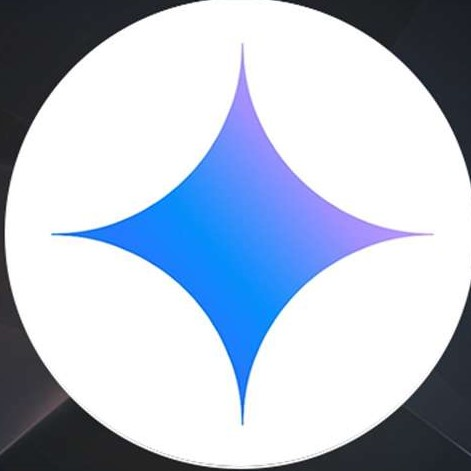

Gemini
- Gemini is Google’s AI chatbot and language model
- Developed by Google DeepMind
- Successor to Bard (previous chatbot by Google)
- Competes with ChatGPT (OpenAI)
- Supports text, code, image, and multi-modal tasks
- Integrated into Google apps like Search, Gmail, Docs
- Comes in different versions (Gemini 1, 1.5, etc.)
- Offers both free and advanced paid access

Grok
- Natural Language Processing (NLP): Generates human-like text responses for conversations, answering questions, and task assistance.
- Text Generation: Creates content like essays, code snippets, or creative writing based on prompts.
- Reasoning: Handles tasks requiring basic reasoning, such as math problems or logical queries, especially in advanced versions like GPT-4.5 or o1.
- Contextual Understanding: Maintains conversation context for interactive dialogues.
- Use Cases: Customer support chatbots, virtual assistants, content creation, coding assistance.
xAI

Deepseek
- Natural Language Processing (NLP): Generates human-like text responses for conversations, answering questions, and task assistance.
- Text Generation: Creates content like essays, code snippets, or creative writing based on prompts.
- Reasoning: Handles tasks requiring basic reasoning, such as math problems or logical queries, especially in advanced versions like GPT-4.5 or o1.
- Contextual Understanding: Maintains conversation context for interactive dialogues.
- Use Cases: Customer support chatbots, virtual assistants, content creation, coding assistance.
HighFlyer
copilot
- Natural Language Processing (NLP): Generates human-like text responses for conversations, answering questions, and task assistance.
- Text Generation: Creates content like essays, code snippets, or creative writing based on prompts.
- Reasoning: Handles tasks requiring basic reasoning, such as math problems or logical queries, especially in advanced versions like GPT-4.5 or o1.
- Contextual Understanding: Maintains conversation context for interactive dialogues.
- Use Cases: Customer support chatbots, virtual assistants, content creation, coding assistance.
Microsoft
Blackbox
- Natural Language Processing (NLP): Generates human-like text responses for conversations, answering questions, and task assistance.
- Text Generation: Creates content like essays, code snippets, or creative writing based on prompts.
- Reasoning: Handles tasks requiring basic reasoning, such as math problems or logical queries, especially in advanced versions like GPT-4.5 or o1.
- Contextual Understanding: Maintains conversation context for interactive dialogues.
- Use Cases: Customer support chatbots, virtual assistants, content creation, coding assistance.
Blackbox